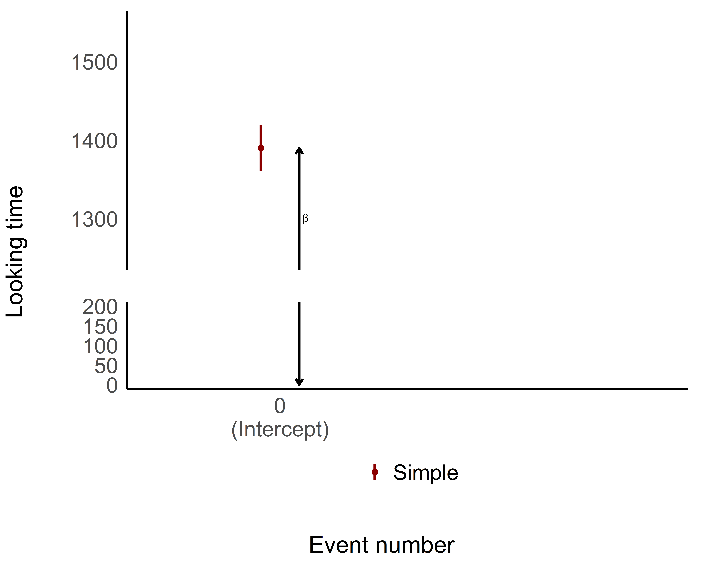
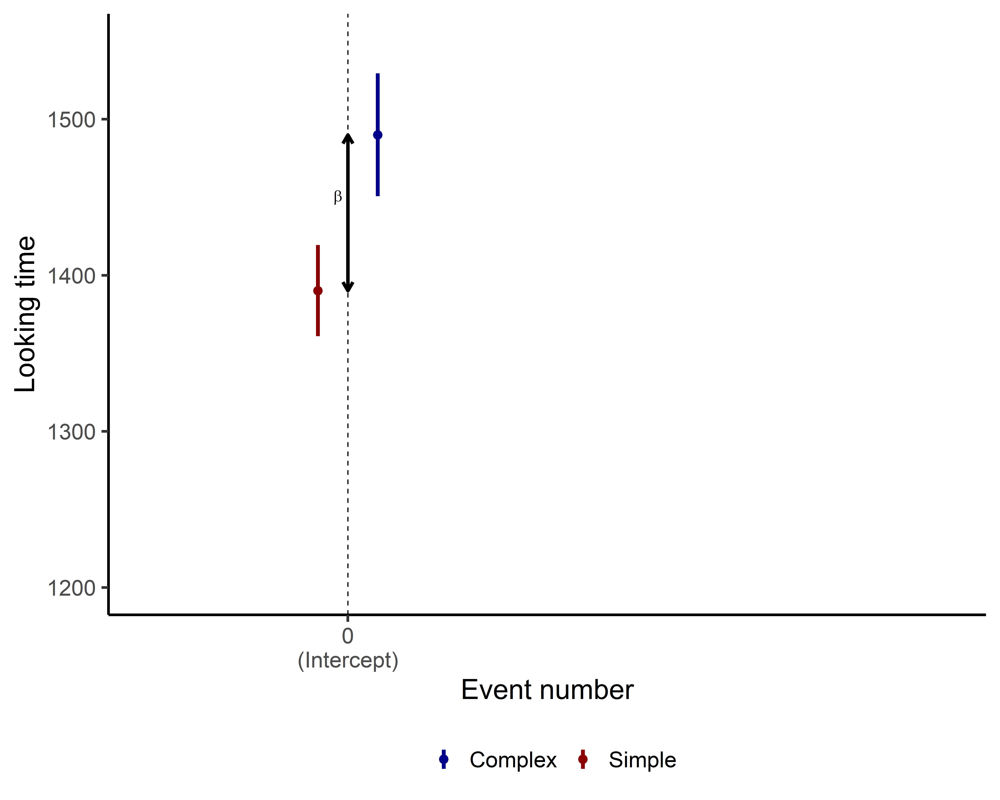
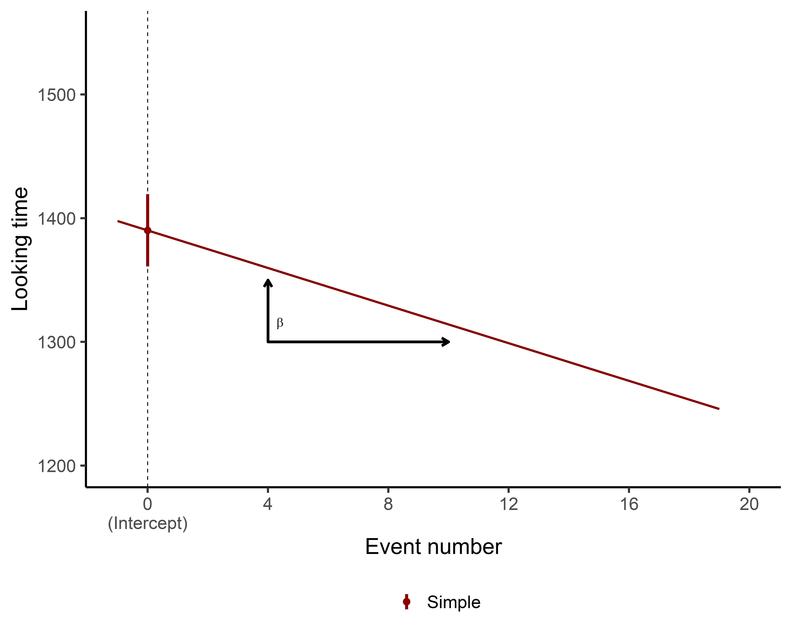

Id Event TrialN ReactionTime LookingTime SES
1 1 NoReward 1 344.1243 1139.8102 low
2 1 NoReward 2 361.9389 1156.4140 low
3 1 NoReward 3 406.3499 1073.5468 low
4 1 NoReward 4 395.2774 1106.5766 low
5 1 NoReward 5 382.1649 990.5572 low
6 1 NoReward 6 367.3000 1053.6605 lowLinear Models
Stats
R
linear models
Welcome to the first tutorial on data analysis!!! Today we are going to talk about one of the most flexible statistical methods: Linear models.
Let’s be clear, WE ARE NOT STATISTICIANS!!!!
We’ll be discussing linear models in a very accessible and practical manner. Our explanations might not align with the rigorous definitions statisticians are accustomed to, and for that, we apologize in advance! However, our aim is to provide a stepping stone for you to grasp the concept of linear models and similar analyses. Let’s get started!
Note
and only R 
In the tutorials regarding stats, we will use R (and R-Studio as the IDE). The concepts and procedures are the same in other programming languages (e.g., Python, Julia). However, we choose R for a simple reason. R is just better at most statistical things!!
Deal with it!
What is a linear model?
A linear model is a simple statistical test that tries to find the best line that represent the relations between two variables ( or more).

What’s truly fascinating about linear models is their versatility. They start off incredibly simple, but their complexity can grow exponentially! This makes them a remarkably flexible tool in the world of data analysis.
Think of linear models as the foundation of a house. 
You can start with a basic structure, but with some clever modifications (like mixed effect models, generalized linear models, quadratic models or additive models), you can build anything from a cozy cottage to a multi-story mansion.
In essence, linear models offer a perfect balance: they’re accessible enough for beginners to grasp, yet powerful enough to satisfy the needs of advanced researchers. As we dive deeper into this topic, you’ll see just how these seemingly simple tools can unlock complex insights in your data.
Hands-on
OK, enough chitchat - let’s start with a practical example. We’ll be working with a data set we created specifically for this tutorial. As mentioned, we’re going to begin with a very basic model, and in the upcoming tutorials, we’ll gradually increase both the complexity and accuracy of our approach.
So, if you notice something that doesn’t seem quite perfect at this stage, don’t worry! It’s all part of the plan. Our goal is to guide you step-by-step towards building the best model. Just remember, this process takes time!
Import data
You can download the data that we will use in this tutorial from here:
Once downloaded we need to import it in our R session. Here we read our csv and we print a small preview of it.
You can see that the data is really simple! We have 4 columns:
Idcolumn that tell us form which participant the data was collectedEventrepresent which condition we were inTrialNthe sequential number of trials in the experimentReactionTimehow quickly participants reacted to the stimuli. We will ignore this variable for nowLookingTimethe variable of interest for today, the one that we want to modelSESrepresents socioeconomic status collected via questionnaire (high, medium, or low) for each participant - we’ll also ignore this for now
Long format
One important information that we need to keep in mind is that to run lm() (and most models!!) in R we need the data in a long format and not a wide format.
In long format, each row represents a single observation. Variables are organized in columns, with one column for the variable names and another for the values. This means that the column you want to model (in the example LookingTime) has 1 row for observation but the other columns usually have repeated entries ( e.g. Id , TrialN, Event)
Wide format, on the other hand, has each row representing a subject or group, with multiple columns for different variables or time-points. While this can be visually appealing for humans, it’s not optimal for our linear modeling needs.
Here a small comparison of the two formats:
Long Format
# A tibble: 8 × 4
Id Event TrialN LookingTime
<chr> <chr> <int> <dbl>
1 1 Complex 1 1450
2 1 Complex 2 1420
3 1 Complex 3 1390
4 1 Simple 1 1380
5 1 Simple 2 1350
6 1 Simple 3 1320
7 2 Complex 1 1480
8 2 Complex 2 1460Wide Format
# A tibble: 3 × 7
Id Complex_Trial1 Complex_Trial2 Complex_Trial3 Simple_Trial1 Simple_Trial2
<chr> <dbl> <dbl> <dbl> <dbl> <dbl>
1 1 1450 1420 1390 1380 1350
2 2 1480 1460 1410 1390 1370
3 3 1520 1490 1450 1410 1380
# ℹ 1 more variable: Simple_Trial3 <dbl>If your data is currently in wide format, don’t worry! R provides tools like the tidyr package with functions such as pivot_longer() to easily convert your data from wide to long format.
Formula
To run models in R we usually use formulas! Sounds complex doesn’t it?!? Well it is not, let me guide you through it.
In R, model formulas follow a specific structure. On the left side of the formula, we place our dependent variable - the outcome we collected and we’re interested in studying. In this case, it’s the LookingTime column. Next, we use the tilde symbol ~. This tilde tells R that we want to predict the variable on the left using the variables on the right side of the formula. On the right side, we list the independent variables (predictors) we believe may influence our dependent variable. To test whether TrialN predicts LookingTime, we can use the formula:
-
LookingTime ~ TrialN. This basic structure allows us to examine a single predictor.
We can extend this model by adding another variable, such as Event, to see if it also predicts LookingTime:
-
LookingTime ~ TrialN + Event. This formulation tells the model to assess whether eitherTrialNandEventpredictsLookingTime, treating them as independent predictors.
To examine the interaction between these variables, we use a slightly different syntax:
-
LookingTime ~ TrialN : Event. This instructs the model to evaluate whether the interaction between the two variables predictsLookingTime.
It’s important to note that using : only tests the interaction, not the individual effects of each variable. To include both main effects and their interaction, we can use the formula:
-
LookingTime ~ TrialN + Event + TrialN:Event.
R offers a shorthand for this complete model using the * operator. The formula:
-
LookingTime ~ TrialN * Eventis equivalent to the longer version above, testing both main effects and the interaction in a more concise format.
These formulas are for simple linear models. Different types of models add small and different pieces to this basic structure. We will see in the next tutorial how to handle these “add-ons”. Now that we have seen how to make a proper formula let’s use it in our model!!
Run the model
OK, now we have our amazing data! Let’s run this Linear model.
It’s extremely simple. We will use the function lm() and we will pass our data df and the formula we just made together!!
After fitting the model we extract the summary of it. This is how we will get all the information we need.
Call:
lm(formula = LookingTime ~ TrialN * Event, data = df)
Residuals:
Min 1Q Median 3Q Max
-772.0 -159.7 -6.1 190.5 607.1
Coefficients:
Estimate Std. Error t value Pr(>|t|)
(Intercept) 1390.1655 29.1769 47.646 <2e-16 ***
TrialN -7.5998 2.9897 -2.542 0.0113 *
EventReward 99.8279 39.3360 2.538 0.0114 *
TrialN:EventReward 0.1332 3.7240 0.036 0.9715
---
Signif. codes: 0 '***' 0.001 '**' 0.01 '*' 0.05 '.' 0.1 ' ' 1
Residual standard error: 253.2 on 656 degrees of freedom
(140 observations deleted due to missingness)
Multiple R-squared: 0.05147, Adjusted R-squared: 0.04713
F-statistic: 11.87 on 3 and 656 DF, p-value: 1.417e-07Woohoo! This was super simple!! 🎉 We can use the output of the model to understand whether the variables are predicting LookingTime. The magic number we’re looking for is the p-value, hiding in the last column of the Coefficients section. If the p-value is below 0.05, we’ve got ourselves an effect! If it’s above, sadly we don’t. AND YES, EVEN IF IT’S 0.051!!! Rules are rules in the p-value game!
What goodies can we spot here? First, our Intercept is significant (don’t worry, we’ll decode this mysterious value later!). Even more exciting, we’ve got a significant effect of TrialN – our continuous variable – (p = 0.0113) and a significant effect of Event (p = 0.0114). Double win! However, the interaction between TrialN and Event is playing hard to get with that p = 0.9715. That’s nowhere near significant!
This is already pretty cool, right?!? But here’s the deal - when looking at model outputs, people often get hypnotized by p-values. However, there’s MUCH more to unpack in a model summary! The full story of our data is waiting to be discovered in the complete model output. Let’s dive in together and crack this statistical puzzle!
Interpret our Model
Here what the summary is telling us!!
-
Call: This section just reports the function call that we passed to
lm(). Nothing fancy, just reminding us what we asked for!
- Residuals: This section shows the leftovers of our model - the differences between what we observed and what our model predicted. Think of residuals as the “Hmm, that’s interesting” parts that our model couldn’t explain. We want these to be as small as possible! 🔍
-
Coefficients: This is where the real magic happens! This section displays:
-
Estimates - The actual numbers that tell us how much our outcome changes when we tweak each predictor
NoteEstimates are often called beta coefficients and are represented using the Greek letter β (we will use this in some plots as it is easier to show)
Standard Error - How confident we are about those estimates (smaller = more confident!)
T-value - A measure of how many standard errors away from zero our estimate is
p-value - The statistical measure that helps us determine if an effect is statistically significant
-
-
Model Fit: The final act of our statistical show! Here we find:
Residual standard error: The average miss by our prediction line ( lower scores are better).
Multiple R-Squared: The proportion of variance explained by our predictors. Ranges from 0 (no explanation) to 1 (perfect explanation).
Adjusted R-squared: A modified version of R-squared that accounts for the number of predictors in the model. Useful for comparing models with different numbers of variables.
F-statistics and p-value: Tests whether the model as a whole is statistically significant. If p < 0.05, the model performs significantly better than using just the intercept.
Estimates
The Estimate section is probably one of the most important parts of our model summary. While the other columns (t-values and p-values) are just numbers that tell us whether the predictor fits, the estimates tell us HOW they fit!!
Let’s go together through the most challenging information:
(Intercept)
The intercept often confuses people who approach linear models for the first time. What exactly is it? 🤔
The (Intercept) represents the reference levels where all our predictors (TrialN and Event) are 0. While TrialN is easy to understand when it’s 0 (TrialN 0 in our case would be the first trial), you may be scratching your head thinking…how can Event be 0? It’s a categorical variable, it can’t be 0!!!! TrialN == 0…sure….but Event??
You are absolutely right! When a model encounters a categorical variable, it cleverly selects the first level of such variable as the reference level. If you take another look at our model summary, you can see that there’s information for the Complex Stimulus level of the Event variable but nothing about the Simple Stimulus level. This is because the Simple Stimulus level has been selected by the model as the reference level and is thus represented in the intercept value! 💡
So our intercept (1390.1) actually represents the predicted LookingTime when:
We’re on the first trial (
TrialN= 0)We’re in the Simple Stimulus condition
The Standard Error of the estimate (29.1) tells us the precision of the estimate.
Tip
Since the intercept has a significant p-value, it means that the estimate for the Simple condition at trial 0 is actually significantly different from 0. In other words, our participants are definitely looking at something during the Simple condition in the first trial – their LookingTime isn’t zero! This might seem obvious (of course they’re looking!), but statistically confirming this baseline is actually meaningful.
Ok, all this explanation is great…but it’s much easier to visualize these Estimates!

As you can see, the intercept is pretty straightforward—it gives us the estimate when everything is set to 0, both for continuous and categorical variables. The intercept is the foundation of your model, where all the predictors are at their baseline value (in this case, Simple was cleverly selected as the reference or 0 level for the categorical variable).
Event
Awesome! Now that we’ve got the intercept down, let’s take a look at the rest of the model output. We’ll skip over the TrialN variable for now and focus on what’s happening with the Event.
At first, the results for Event [Complex] might look like they’re giving us the value of looking time for the Complex Stimulus. Super easy, right?!?
Well… not exactly! 🤔
In linear models, each coefficient shows the difference in relation to the intercept (the 0 or the reference level), not the exact value of the Complex condition.
It sounds a bit confusing, but let’s break it down. If we want to understand what is the estimate for a Complex event we need to take the Intercept (1390.1) –as we mentioned that is actually the Simple event – and then just simply add to it the Estimate for the Event [Complex] (99.8). So the model is telling us that a Complex event should be 1390.1 + 99.8 = 1489.9.
See? Not too bad! Let’s visualize it and make it even clearer!

TrialN
So, interpreting the coefficients for categorical variables wasn’t too tricky, right? But what about continuous variables like TrialN?
No worries, it’s actually pretty straightforward! The coefficient for a continuous variable represents the slope, or the incline, of the line for that variable.
In simpler terms, it shows how much the outcome (in this case, LookingTime) changes for each unit increase in the continuous variable (TrialN). So, in our case the coefficient for TrialN is -7.5, this means that for each unit increase in TrialN, the LookingTime is expected to decrease by 7.5 units (assuming all other variables stay the same).
Important
Remember!! This coefficient represents the effect of TrialN specifically when Event is at its reference level (Simple). In other words, this -7.5 decrease in LookingTime per trial applies specifically to the Simple condition!
Even easier..let’s plot again!

Interaction
Alright, now we’re getting to the final step! Let’s talk about the interaction between TrialN and Event! Now, we’re not just dealing with a single factor or continuous variable, but looking at how they interact with each other. Don’t worry—if you understood the previous steps, this will be a breeze!
We’ll take it step by step and look at the interaction in our model parameters. The interaction term between TrialN and Event [Complex] tells us how the relationship between TrialN and LookingTime changes when we switch from the reference Event (Simple) to the Complex condition.
To put it simply:
For Simple events, LookingTime decreases by 7.5 units per trial (that’s our main
TrialNcoefficient)The interaction coefficient (0.13) tells us how this slope changes for Complex events
So for Complex events, the slope would be: -7.5 + 0.13 = -7.37 units per trial.
What does this mean in real terms? If the interaction coefficient is positive (like in our example), it means participants’ looking time decreases more slowly during Complex trials compared to Simple trials – the estimate is slightly less negative.
Important
In this model the interaction effect is extremely small and not significant. This means that there is actually no difference in how the TrialN predicted Looking time in either Simple or Complex! Looking time decreases at basically the same rate regardless of which event type we’re looking at!!!
While there is no significant difference, let’s plot the estimated effects for TrialN for both Complex and Simple conditions to visualize this relationship!
[1] time est_performance_EventTrial
[3] est_performance_Interaction
<0 rows> (or 0-length row.names)
Important
Do you notice any difference in how the slopes between the two conditions? Probably not! If you examine the model summary, you’ll see the interaction effect is very small and not statistically significant.
This tells us that TrialN predicts Looking time similarly in both Simple and Complex conditions. In other words, looking time decreases at essentially the same rate regardless of which event type participants observed.
I hope that by now you got a decent understanding on how to interpret what a linear model is telling you!! Different kinds of models will add small pieces of information here and there, but the main information will still be there. Thus, if you got here, you are a step closer to becoming a stats genius!!! 🧠📊
But wait, we’re not done yet! Now it’s time to check whether our model actually meets the assumptions of linear regression. Remember those plots we generated earlier? Let’s make sure our statistical foundation is solid before we draw any final conclusions!
Centering Predictors
We’ve seen how both continuous and categorical predictors are set to 0 in the intercept, and then we interpret the model output based on the difference between these reference levels.
But here’s the thing - sometimes comparing to 0 for a continuous variable doesn’t make much sense! Imagine we’re talking about body weight as a predictor. A weight of 0 would be… well, pretty weird as a comparison level, right? 🤔 This is one of the main reasons why it’s often suggested to center continuous predictors. By centering (subtracting the mean from each value), we transform our values so they have a mean of 0! This means the intercept, being at 0, will actually reflect the mean of the predictor rather than some arbitrary or impossible value.
Z-scoring takes this one step further by not only centering the data (subtracting the mean) but also scaling it by dividing by the standard deviation. This standardizes your variables to have a mean of 0 and a standard deviation of 1. The big advantage? It puts all your predictors on the same scale, making their coefficients directly comparable in terms of effect size.
In practice, it’s mostly suggested that you just go straight to z-scoring your continuous predictors as a simple one-size-fits-all approach. It gives you all the benefits of centering plus standardized coefficients that are easier to compare across different predictors!
On top of making it easier to interpret your model results, it will also help your model fit!! We won’t dwell too much on the statistical reasons, but these transformations reduce multicollinearity, stabilize coefficient estimates (especially for interactions), and improve model convergence. Your model just works better and makes more intuitive sense! 🚀
Run the model
Ok, this sounds fair right? Before running a model we can just standardize the values of our predictors (in our case TrialN). Yeah..but how to? Our favorite way is to use the standardize() function from the the easystats library.
Note
Easystats is a collection of R packages that includes tools dedicated to the post-processing of statistical models. It is made of all these packages: report, correlation, modelbased, bayestestR, effectsize, see, parameters, performance, insight, datawizard. We will extensively use all these package in our tutorials. The cool thing is that you can import all of them by just simply importing the collection Easystats with library(easystats).
In this tutorial here we will use the function from the packages datawizardand performance(in the Model checks sections).
datawizard allows to manipulate, clean, transform, and prepare your data
performance is a package to check model performance metrics.
So now we import easystats and we use the function standardize()
Id Event TrialN ReactionTime LookingTime SES StandardTrialN
1 1 NoReward 1 344.1243 1139.8102 low -1.6464789
2 1 NoReward 2 361.9389 1156.4140 low -1.4731654
3 1 NoReward 3 406.3499 1073.5468 low -1.2998518
4 1 NoReward 4 395.2774 1106.5766 low -1.1265382
5 1 NoReward 5 382.1649 990.5572 low -0.9532246
6 1 NoReward 6 367.3000 1053.6605 low -0.7799111We have created like this a new column StandardTrialN with the standardized values of the TrialN and now we can run the model again
Call:
lm(formula = LookingTime ~ StandardTrialN * Event, data = df)
Residuals:
Min 1Q Median 3Q Max
-772.0 -159.7 -6.1 190.5 607.1
Coefficients:
Estimate Std. Error t value Pr(>|t|)
(Intercept) 1310.3674 16.9387 77.359 < 2e-16 ***
StandardTrialN -43.8501 17.2505 -2.542 0.0113 *
EventReward 101.2269 21.1961 4.776 2.21e-06 ***
StandardTrialN:EventReward 0.7688 21.4872 0.036 0.9715
---
Signif. codes: 0 '***' 0.001 '**' 0.01 '*' 0.05 '.' 0.1 ' ' 1
Residual standard error: 253.2 on 656 degrees of freedom
(140 observations deleted due to missingness)
Multiple R-squared: 0.05147, Adjusted R-squared: 0.04713
F-statistic: 11.87 on 3 and 656 DF, p-value: 1.417e-07As you can see the estimates are different!!! Because as we mentioned the reference level and the scale are different now. However do not panic, even if some values are different the relations are the same, we still have negative estimate for the time variable (here StandardTrialN and before TrialN) and positive for the Complex condition. Also the p-values are the same!
So there you have it - standardizing your predictors makes your model both more interpretable and more robust, all while keeping the fundamental relationships in your data intact. It’s one of those simple steps that can make a big difference in your statistical journey! 🌟
Model checks
So now we have run our model and seen the summary… That’s great but how can we know that our model actually is ok?? Linear models, like most statistical techniques require some data assumption to be run. These assumption need to be met otherwise even if our model could be showing amazing results it won’t be valid.
Warning
As we mentioned at the beginning of our tutorial the model we have run in this tutorial is a very simple model that is not actully…correct!!
What are these assumptions?? Well they depend a lot on the model you are running. We won’t go into much details as there are very good website that explain them1 ,2, in this simple linear mode they are:
Linear relationship: There exists a linear relationship between the independent variable, x, and the dependent variable, y.
Independence: The residuals are independent. In particular, there is no correlation between consecutive residuals in time-series data.
Homoscedasticity/Homogeneity of variance: The residuals have constant variance at every level of x.
Normality: The residuals of the model are normally distributed.
Again this is not a theoretical tutorial. So we won’t go into details as which are the assumptions (please read some of the link provided tho!!) but we will show you how to actually check these assumptions.
There is a super easy and convenient way we usually check these assumptions. Using the easystats library we can run the function check_model() to indeed check the model assumptions.
check_model(mod_lm)
Perfect all done!! We have a plot of the model assumptions and we can check if they are met!! But what do these plot represent? Here below we created a table that mirrors each plot with it explanation in it. These are brief and simple explanations. If you want to understand more about the check_model() function we suggest you to read the documentation about it and also the very nice vignette that the package provides.
| Model Diagnostic Checks | |
|---|---|
|
Posterior predictive checks Compare simulated data from the fitted model to actual data. This reveals systematic discrepancies, helping assess if the model captures key data features and if the chosen distribution family is appropriate. |
Linearity Checks if predictors have a linear relationship with the outcome. A straight, horizontal line suggests the model specification is appropriate. Curved or sloped lines indicate potential non-linear relationships, signaling the need for model adjustments. |
|
Homoscedasticity/Homogeneity of variance Checks for homoscedasticity (constant variance). Residuals should spread evenly around a horizontal line across all predictor values. Uneven spread suggests variance inconsistencies, potentially requiring model adjustments. |
Outliers Identifies influential observations using Cook’s distance. Points beyond the dashed lines are outliers that may excessively impact model estimates, warranting further investigation or potential removal. |
|
Multi-Collinearity Evaluates predictor independence. High collinearity indicates redundant predictors or possible unobserved variables influencing multiple predictors, which can affect interpretation and model stability. |
Normality of residuals Uses Q-Q plots to assess if residuals follow a normal distribution. Points should align with the reference line; deviations suggest the model poorly predicts certain outcome ranges, potentially violating normality assumptions. |
Given these information about these plots…. don’t you think there is something that doesn’t add up???????? 🤔
Well some assumptions are not really met aren’t they!!! Look at those residuals!!! Not great…not really normal…not really straight!! 📉
Do not worry!! We have fit an extremely simple model in this tutorial… as you will see in the next tutorial this model is actually WRONG!!! Just do not worry…this model has served its purpose…….for now.
Tip
One of the awesome features of easystats is its broad support for various model types. What’s the big deal? Well, it means that the check_model() function adapts its checks based on the specific model you’re using! This flexibility makes it an incredibly powerful and user-friendly tool. Most of the linear and non-linear models (or at least most of them) can be fed into the check_model() function, allowing you to easily verify if it meets the necessary assumptions.
Keep in mind: Always be aware of which assumptions your model should satisfy. We’re not suggesting you use this function blindly! Instead, we’re showing you how to efficiently plot all relevant assumptions in one go. It’s simpler and quicker!!
Statistical tests
You’ve probably noticed that we’ve been relying on visual checks so far. In our view, this is often the best approach, as statistical tests for model assumptions can sometime be overly stringent. However, there may be situations where you need to provide statistical evidence to support your model assumptions. This often happens when a reviewer (let’s call them Reviewer 2, shall we?) insists on seeing numerical proof. Fortunately, easystats has got your back.
Here are some examples of what you can use:
check_normality(mod_lm)Warning: Non-normality of residuals detected (p < .001).To check the normality of our residuals and:
check_homogeneity(mod_lm)OK: There is not clear evidence for different variances across groups (Bartlett Test, p = 0.986).to check homoscedasticity/homogeneity of variance. Again you can find all the function in the performance package (part of the Easystats collection)
END
Well done reaching the end!!
This was a tough one!! But again, remember these are solid foundations that will come into use so many times in the future!!
Understanding linear models is like learning to ride a bike - it might feel wobbly at first, but once you get it, you’ll never forget! You now have the skills to interpret intercepts, coefficients, p-values, and interactions, plus you know how to check if your model is actually doing what it’s supposed to do.